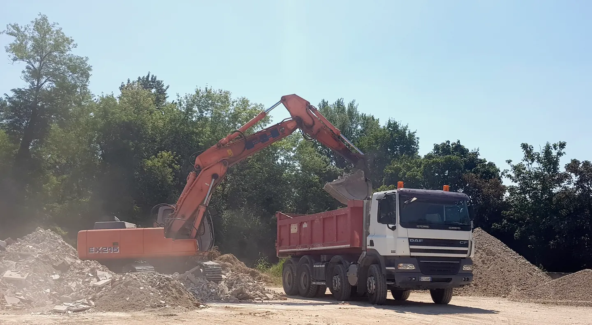
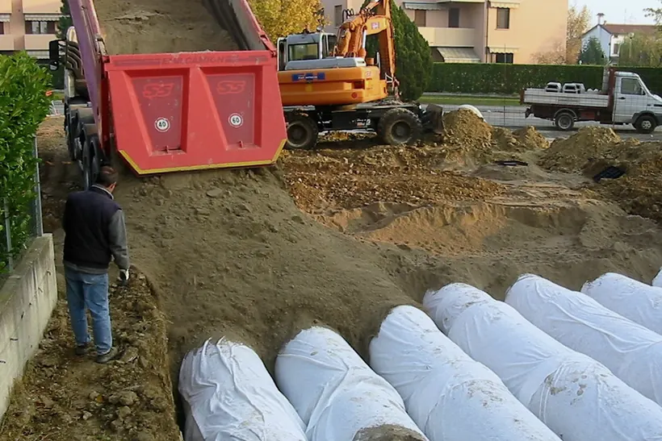
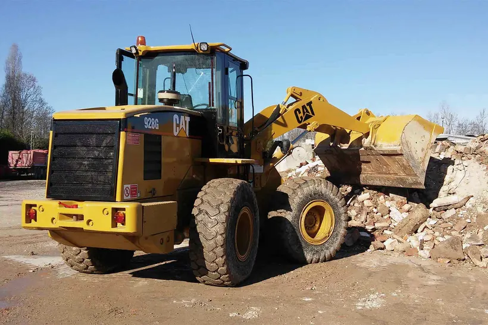
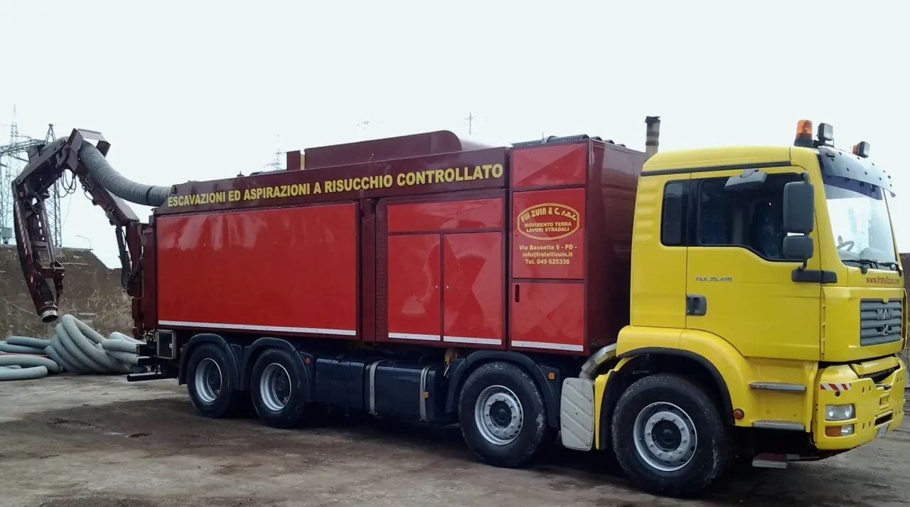

In qualsiasi situazione e spazio
Scavi, scarrabili e fognature a Padova Est, dal 1946
Fiat-Hitachi EX215 e DAF
Carico di terra
Lavori
Per casa e cantiere
- Cassoni scarrabili 2-25 m³Noleggio. Anche scarrabili piccoli, della larghezza di un'automobile.
- FognatureFormazione e sistemazione delle fognature.
- Cortili e passi carraiSistemazioni esterne anche di piccola entità.
- Scavi e movimento terraEscavatori cingolati, gommati e mini escavatori.
- Ritiro di macerie e terraIl materiale che viene da demolizioni e scavi.
Per imprese ed enti
- DemolizioniCon martelli demolitori e pinze idrauliche.
- Strade e urbanizzazioniStrade, marciapiedi, piste ciclabili e rotatorie, anche la manutenzione di strade e autostrade.
- Escavatori a risucchioScavi controllati e aspirazione, anche in luoghi confinati.
- Lavori pubblici con attestazione SOAI dati della Ditta per enti e imprese.

Scavi e movimento terra

Ritiro di macerie e terra
Escavazioni ed aspirazioni a risucchio controllato

Escavatore a risucchio su autocarro MAN a quattro assi
Sulla fiancata: Via Bassette 6, Padova
Scavi controllati e aspirazione di qualsiasi materiale: liquido, secco, solido e polveri, anche in luoghi confinati.
Per una richiesta bastano il luogo, il materiale, la quantità approssimativa e la data; portata, profondità di scavo e lunghezza del tubo si chiedono al telefono, per il vostro lavoro.
Scrivi la richiestaSi apre il vostro programma di posta. Senza programma, l'indirizzo è info@fratellizuin.it
Formazione e sistemazione delle fognature, tra i lavoriTre generazioni, dal cortile di casa
La Ditta nasce nel primo dopoguerra dai tre fratelli Zuin, nel cortile della loro casa, con il trasporto di materiale da costruzione e il primo autocarro, un DOGE.
Poi arrivano altri autocarri ed escavatori, i figli entrano nella Società e il lavoro passa agli scavi, alle demolizioni e alle urbanizzazioni. La prima demolizione importante è l'ex Foro Boario di Padova, negli anni 1968-69; in città seguono la demolizione della sede dell'Azienda del Gas in Via Trieste e una parte dell'impianto di illuminazione di Prato della Valle.
Oggi la Ditta ha l'esperienza di tre generazioni; nella ragione sociale ci sono Antonio, Luigi e Andrea Zuin.
Dati della Ditta e attestazione SOA
La Ditta F.lli Zuin & C. snc ha ottenuto l'attestazione di qualificazione all'esecuzione dei lavori pubblici dalle SOA.
Chiedi l'attestazione SOA- Ragione sociale
- Fratelli Zuin snc di Zuin Antonio, Luigi, Andrea & C.
- Partita IVA e codice fiscale
- 00259210284
- REA
- PD 82662
- Attività
- Costruzione di strade e autostrade, ATECO 42.11
- Sede legale
- Via Torre 164, 35129 Padova
- Sede operativa
- Via Bassette 6/A, 35129 Padova
Richiedi un preventivo gratuito
049 625336Per cassoni, scavi e lavori piccoli si fa prima al telefono.
- info@fratellizuin.it
- Fax
- 049 6458813
- Sede operativa e amministrativa
- Via Bassette 6/A, 35129 Padova
- Dall'A4 uscite al casello di Padova Est; dopo il semaforo prendete Via Madonna del Rosario, poi Via Bassette: la sede è sulla sinistra dopo 100 m.